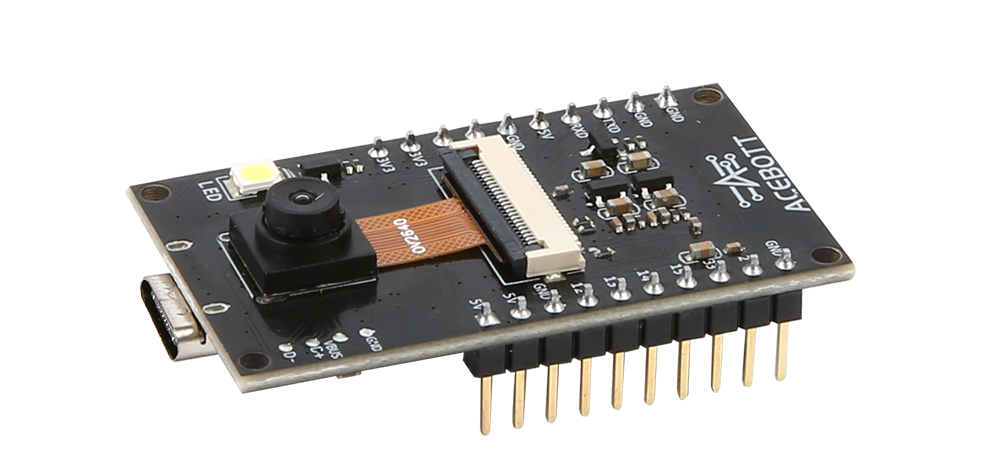
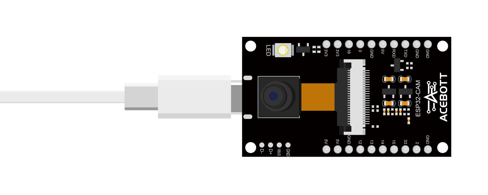
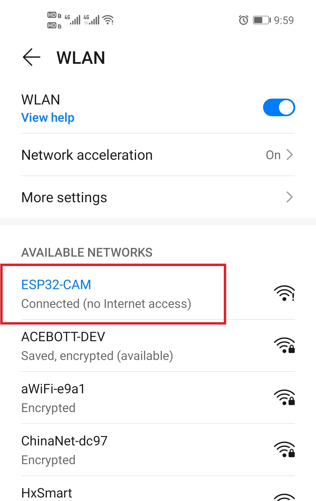
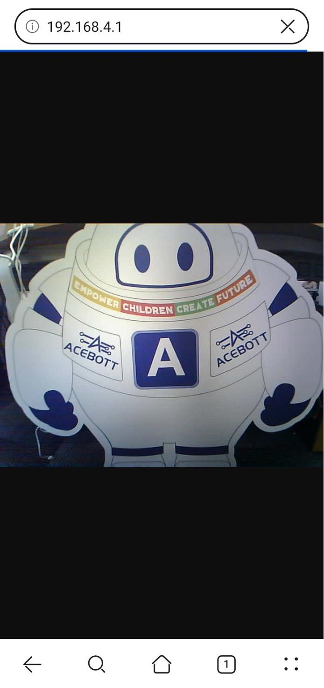

QA011 ESP32 CAM V1.0¶
1.Introduction
ACEBOTT-ESP32-CAM-V1.0 is the most competitive small size camera module in the industry, which can work independently as the smallest system.
ACEBOTT-ESP32-CAM-V1.0 can be widely used in various Internet of things applications, suitable for home smart devices, industrial wireless control, wireless monitoring, QR wireless identification, wireless positioning system signals and other Internet of things applications.
ACEBOTT-ESP32-CAM-V1.0 adopts DIP package, which can be used directly when it is inserted into the bottom plate to realize the rapid production of products, provide customers with highly reliable connection, and facilitate the application in various Internet of Things hardware terminal occasions.
2.Features
Ultra-small volume 802.11b/g/n Wi-Fi SoC module
The low-power dual-core 32-bit CPU can be used as an application processor
The main frequency up to 240 MHz, computing power up to 600 DMIPS
Built-in 520 KB SRAM, external 8MB PSRAM
Support for UART / SPI / I2C / PWM / ADC / DAC interfaces
Support for OV2640 and OV7670 cameras, with a built-in flash
Support image WiFI upload
Supports multiple dormancy modes
Lwip and FreeRTOS
Supports the STA / AP / STA + AP working mode
Support Smart Config / AirKiss one-click distribution network
3.Specifications
| Parameters | Value/Description |
|---|---|
| Size | 27.1x47.1(mm) |
| Encapsulation | DIP-20 |
| Power supply | Type-c |
| Support interface | UART/SPI/I2C/PWM |
| Number of IO ports | 10 |
| Serial port baud rate | Support 110 ~ 4608000 bps, Default 115200 bps |
| SPI Flash | Default 32Mbit |
| Image output format | JPEG (supported by OV2640 only), BMP, GRAYSCALE |
| Spectrum range | 2400~2483.5MHz |
| Antenna form | External PCB antenna, gain 2 dBi |
| Power consumption | Turn off the flash:180mA@5V |
| Turn on the flash light and adjust the brightness to the maximum:310mA@5V | |
| Deep-sleep: The lowest power consumption can reach 6 mA@5V | |
| Moderm-sleep: The minimum level is 20 mA@5V | |
| Light-sleep: The minimum value can reach 6.7 mA@5V | |
| Security | WEP/WPA-PSK/WPA2-PSK |
| Power supply range | 4.75-5.25V |
| Operating temperature | -20 °C ~ 70 °C |
| Storage environment | -40 °C ~ 1250 °C，<90%RH |
4.Sample Code
Connect the board to the computer using a Type-C data cable: Select “ESP32” -> “ESP32 Dev Module” from the Tools > Board menu. Choose the appropriate Port. And upload it to the board using the Upload button.
（1）Wiring Diagram
（2）Sample Code
1 2 3 4 5 6 7 8 9 10 11 12 13 14 15 16 17 18 19 20 21 22 23 24 25 26 27 28 29 30 31 32 33 34 35 36 37 38 39 40 41 42 43 44 45 46 47 48 49 50 51 52 53 54 55 56 57 58 59 60 61 62 63 64 65 66 67 68 69 70 71 72 73 74 75 76 77 78 79 80 81 82 83 84 85 86 87 88 89 90 91 92 93 94 95 96 97 98 99 100 101 102 103 104 105 106 107 108 109 110 111 112 113 114 115 116 117 118 119 120 121 122 123 124 125 126 127 128 129 130 131 132 133 134 135 136 137 138 139 140 141 142 143 144 145 146 147 148 149 150 151 152 153 154 155 156 157 158 159 160 161 162 163 164 165 166 167 168 169 170 171 172 173 174 175 176 177 178 179 180 181 182 183 184 185 186 187 188 189 190 191 192 193 194 195 196 197 198 199 200 201 202 | #include "esp_camera.h"
#include <WiFi.h>
#include "esp_timer.h"
#include "img_converters.h"
#include "Arduino.h"
#include "fb_gfx.h"
#include "soc/soc.h" //disable brownout problems
#include "soc/rtc_cntl_reg.h" //disable brownout problems
#include "esp_http_server.h"
const char *ssid = "ESP32-CAM";
const char *password = "12345678";
WiFiServer server(100);
WiFiClient client;
#define PART_BOUNDARY "123456789000000000000987654321"
// #define CAMERA_MODEL_AI_THINKER
#define PWDN_GPIO_NUM 32
#define RESET_GPIO_NUM -1
#define XCLK_GPIO_NUM 0
#define SIOD_GPIO_NUM 26
#define SIOC_GPIO_NUM 27
#define Y9_GPIO_NUM 35
#define Y8_GPIO_NUM 34
#define Y7_GPIO_NUM 39
#define Y6_GPIO_NUM 36
#define Y5_GPIO_NUM 21
#define Y4_GPIO_NUM 19
#define Y3_GPIO_NUM 18
#define Y2_GPIO_NUM 5
#define VSYNC_GPIO_NUM 25
#define HREF_GPIO_NUM 23
#define PCLK_GPIO_NUM 22
#define RXD2 14
#define TXD2 13
static const char* _STREAM_CONTENT_TYPE = "multipart/x-mixed-replace;boundary=" PART_BOUNDARY;
static const char* _STREAM_BOUNDARY = "\r\n--" PART_BOUNDARY "\r\n";
static const char* _STREAM_PART = "Content-Type: image/jpeg\r\nContent-Length: %u\r\n\r\n";
httpd_handle_t stream_httpd = NULL;
static esp_err_t stream_handler(httpd_req_t *req){
camera_fb_t * fb = NULL;
esp_err_t res = ESP_OK;
size_t _jpg_buf_len = 0;
uint8_t * _jpg_buf = NULL;
char * part_buf[64];
res = httpd_resp_set_type(req, _STREAM_CONTENT_TYPE);
if(res != ESP_OK){
return res;
}
while(true){
fb = esp_camera_fb_get();
if (!fb) {
Serial.println("Camera capture failed");
res = ESP_FAIL;
} else {
if(fb->width > 400){
if(fb->format != PIXFORMAT_JPEG){
bool jpeg_converted = frame2jpg(fb, 80, &_jpg_buf, &_jpg_buf_len);
esp_camera_fb_return(fb);
fb = NULL;
if(!jpeg_converted){
Serial.println("JPEG compression failed");
res = ESP_FAIL;
}
} else {
_jpg_buf_len = fb->len;
_jpg_buf = fb->buf;
}
}
}
if(res == ESP_OK){
size_t hlen = snprintf((char *)part_buf, 64, _STREAM_PART, _jpg_buf_len);
res = httpd_resp_send_chunk(req, (const char *)part_buf, hlen);
}
if(res == ESP_OK){
res = httpd_resp_send_chunk(req, (const char *)_jpg_buf, _jpg_buf_len);
}
if(res == ESP_OK){
res = httpd_resp_send_chunk(req, _STREAM_BOUNDARY, strlen(_STREAM_BOUNDARY));
}
if(fb){
esp_camera_fb_return(fb);
fb = NULL;
_jpg_buf = NULL;
} else if(_jpg_buf){
free(_jpg_buf);
_jpg_buf = NULL;
}
if(res != ESP_OK){
break;
}
//Serial.printf("MJPG: %uB\n",(uint32_t)(_jpg_buf_len));
}
return res;
}
void startCameraServer(){
httpd_config_t config = HTTPD_DEFAULT_CONFIG();
config.server_port = 80;
httpd_uri_t index_uri = {
.uri = "/",
.method = HTTP_GET,
.handler = stream_handler,
.user_ctx = NULL
};
if (httpd_start(&stream_httpd, &config) == ESP_OK) {
httpd_register_uri_handler(stream_httpd, &index_uri);
}
}
void setup() {
// WRITE_PERI_REG(RTC_CNTL_BROWN_OUT_REG, 0); //disable brownout detector
Serial.begin(115200);
Serial2.begin(115200, SERIAL_8N1, RXD2, TXD2);
// Serial.setDebugOutput(false);
camera_config_t config;
config.ledc_channel = LEDC_CHANNEL_0;
config.ledc_timer = LEDC_TIMER_0;
config.pin_d0 = Y2_GPIO_NUM;
config.pin_d1 = Y3_GPIO_NUM;
config.pin_d2 = Y4_GPIO_NUM;
config.pin_d3 = Y5_GPIO_NUM;
config.pin_d4 = Y6_GPIO_NUM;
config.pin_d5 = Y7_GPIO_NUM;
config.pin_d6 = Y8_GPIO_NUM;
config.pin_d7 = Y9_GPIO_NUM;
config.pin_xclk = XCLK_GPIO_NUM;
config.pin_pclk = PCLK_GPIO_NUM;
config.pin_vsync = VSYNC_GPIO_NUM;
config.pin_href = HREF_GPIO_NUM;
config.pin_sccb_sda = SIOD_GPIO_NUM;
config.pin_sccb_scl = SIOC_GPIO_NUM;
config.pin_pwdn = PWDN_GPIO_NUM;
config.pin_reset = RESET_GPIO_NUM;
config.xclk_freq_hz = 20000000;
config.frame_size = FRAMESIZE_UXGA;
config.pixel_format = PIXFORMAT_JPEG; // for streaming
//config.pixel_format = PIXFORMAT_RGB565; // for face detection/recognition
config.grab_mode = CAMERA_GRAB_WHEN_EMPTY;
config.fb_location = CAMERA_FB_IN_PSRAM;
config.jpeg_quality = 12;
config.fb_count = 1;
// if PSRAM IC present, init with UXGA resolution and higher JPEG quality
// for larger pre-allocated frame buffer.
if(config.pixel_format == PIXFORMAT_JPEG){
if(psramFound()){
config.jpeg_quality = 10;
config.fb_count = 2;
config.grab_mode = CAMERA_GRAB_LATEST;
} else {
// Limit the frame size when PSRAM is not available
config.frame_size = FRAMESIZE_SVGA;
config.fb_location = CAMERA_FB_IN_DRAM;
}
} else {
// Best option for face detection/recognition
config.frame_size = FRAMESIZE_240X240;
#if CONFIG_IDF_TARGET_ESP32S3
config.fb_count = 2;
#endif
}
// camera init
esp_err_t err = esp_camera_init(&config);
if (err != ESP_OK)
{
Serial.printf("Camera init failed with error 0x%x", err);
return;
}
sensor_t *s = esp_camera_sensor_get();
//drop down frame size for higher initial frame rate
//s->set_framesize(s, FRAMESIZE_SXGA); //Byte length sampling value:60000 #9 (High picture quality) 1280x1024
s->set_framesize(s, FRAMESIZE_SVGA); //Byte length sampling value:40000 #7 (Medium picture quality) 800x600
//s->set_framesize(s, FRAMESIZE_QVGA); //Byte length sampling value:10000 #4 (Poor picture quality) 320x240
s->set_vflip(s, 1); //Image orientation Settings (up and down)
s->set_hmirror(s, 1); //Image orientation Settings (left and right)
WiFi.setTxPower(WIFI_POWER_19_5dBm);
WiFi.mode(WIFI_AP);
WiFi.softAP(ssid, password, 5);
// WiFi.softAP(ssid, password);
Serial.print("\r\n");
startCameraServer();
Serial.print("\r\n");
Serial.print("Camera Ready! Use 'http://");
Serial.print(WiFi.softAPIP());
Serial.println("' to connect");
server.begin(); // Starting the server
delay(100);
}
void loop() {
delay(1);
}
|
5.Test Result
After uploading the program, the imaging effect will be displayed on the web end. First of all, the terminal device needs to be connected to the WiFi issued by the camera module.
Hint
The WiFi name and password in the program can be customized.
The IP address of the camera module in AP mode is: 192.168.4.1, and then enter the IP address in the address bar of the terminal browser to access the web page of the camera image. By moving the direction of the camera, you can see the live imaging effect of the camera module on the web page.
6.Related Resources